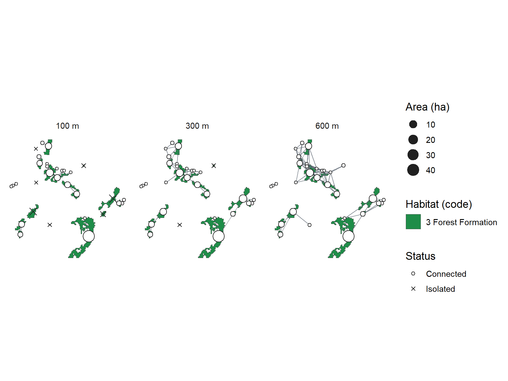
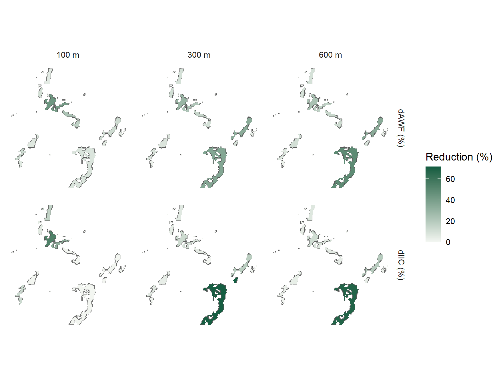

10 Vectorization and connectivity
Fragments as polygons
To analyse connectivity, fragments need to become polygons.
reclass_to_polygons() performs that conversion from the reclassified maps and
keeps area, year and class identity. Here, the 2024 forest:
polygons <- reclass_to_polygons(metrics, years = 2024, save_shp = FALSE)There are 31 fragments, totalling 107 ha.
With save_shp = TRUE, each year is also written as a shapefile.
Connectivity at several thresholds
land_connectivity() links fragments that lie closer than a maximum distance,
that is, the distance an organism can travel outside the forest, and computes
connectivity indices for each threshold:
connectivity <- land_connectivity(polygons, max_dist = c(100, 300, 600),
language = "en")
connectivity$plot
| Maximum distance (m) | Components | Isolated fragments | IIC (×10⁻³) |
|---|---|---|---|
| 100 | 15 | 7 | 0.20 |
| 300 | 6 | 2 | 1.84 |
| 600 | 4 | 0 | 2.08 |
For a species that only crosses 100 m of open land, the forest splits into 15 disconnected groups, with 7 isolated fragments. At 300 m, 6 groups remain, and the integral index of connectivity (IIC) becomes 9 times larger. From 300 to 600 m, the gain is small: for species able to cross about 300 m, the remaining forest already works as a network.
Priority fragments
patch_imp_fast() measures how much connectivity would drop if each fragment
were removed, in the chosen scenario:
scenario_300 <- connectivity$scenarios[["300"]]$land
importance <- patch_imp_fast(scenario_300, metric = "IIC")Losing either of the two most important fragments would cut the IIC by 71.4% and 70.5%, respectively, while 25 of the 31 fragments reduce it by less than 5% each. The forest’s connectivity therefore depends on conserving a handful of fragments.
land_connectivity() already computes this prioritization for each threshold,
and the map shows how much the index would drop without each fragment:
connectivity$importance_plot